redux-form - это библиотека, которая добавляет в store reducer и flux круговорот с элементами формы уже происходит с этим участком state который был создан reducer библиотеки redux-form
Страница с документацией библиотеки
Для инсталяции библиотеки redux-form в терминале вводим команду
npm install redux-form --saveredux-form предоставляет нам специальный хок, который вернет нам контейнерную компоненту, которая в свою очередь и будет общаться с тем участком state который был создан redux-form
Заходим в файл где создается store c помощью redux и импортируем библиотеку redux-form
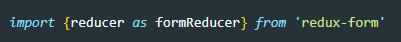После чего в combineReducers добавляем новый reducer

ВАЖНО имя ключа задать как form
Теперь нам нужно нашу форму (а вернее компоненту которая отрисовывает нашу форму) обернуть в ХОК - reduxForm.

Перед этим не забываем импортировать ХОК

Хок reduxForm принимает в качестве аргумента объект, который созержит свойство - form где необходимо указать уникальное имя формы. по этому имени redux-form будет обращатся к форме
Для того что бы не создавать обработчики событий для полей input (для flux круговорота) мы вместо input будем использовать Field, перед использованием не забываем импортировать их
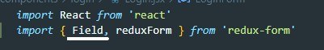Филдам обязательно задаем атрибут name, на значения этих атрибутов будет реагировать redux-form. Так же в атрибуте component указываем тип филда

Хок reduxForm прокидывает кучу callback в нашу компоненту. Среди них есть функция которая называется handleSubmit. Для получения данных полей формы вешаем событие на форму onSubmit и передаем туда через пропсы handleSubmit

redux-form после выполнения submit добавить все данные с элементов формы в объект и этот объект передаст callBack - onSubmit, т.е. нужно у контейнерной компоненты которые вернул нам Хок reduxForm прокинуть через пропсы callback который должен называться onSubmit
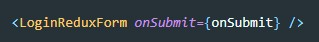Вот как в целом будет выглядить компонента которая отрисовывает контейнерную компоненту компоненты которая отрисовывает форму (УЖАС!!!)
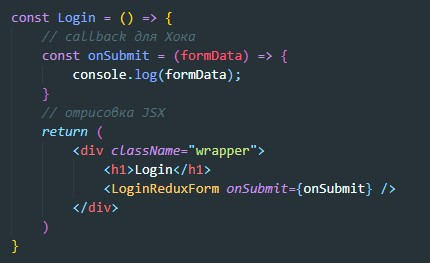Валидаторы - это функции которые проверяют входные данные
В папке src создаем каталог, для примера называем его utils. В этой папке создаем validator.js и пишем вот такую функцию.
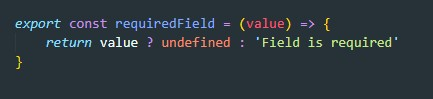Еще раз что такое Валидатор, это функция которая принимает значение поля, проверяет это поле и в зависимости от того что нам нужно возвращает либо undefined либо какую то строчку с ошибкой. Пример выше промерят на заполнение поля. т.е. если value пустое оно вернет false и в этом случае функция вернет строчку "Field is required". Вот пример валидатора которая проверяет максимальное количество введенных символов
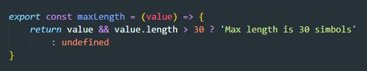Теперь как сделать так что бы наше поле Field передавало значение в эту функцию, об этом позаботились разработчики Redux-Form. Полю Field мы просто создаем атрибут validate и передаем в него в фигурных скобках валидатор. Если нужно одному полю передать несколько валидаторов, то атрибуту передаем массив где перечисляем валидаторы
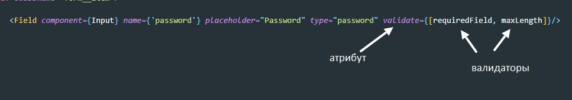Если мы хотим создать валидотор с использованием замыкания, то нам сначала придется вне Field создать переменную куда поместим результат ValidateCreator и только затем передадим в validator
Пример ValidateCreator
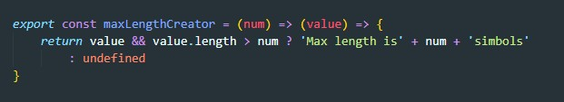Сначала перед render получаем замкнутую функцию
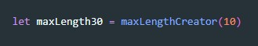И только потом передаем
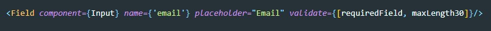Как вообще это работает? Redux-form обеспечивает контроль flux круговорота. Он сам вызывает наши валидаторы и передает туда значения полей. Вопрос, когда он этоделает? разберем далее.
Первое что нужно сделать это создать компоненту, которая отрисовывает поле ввода
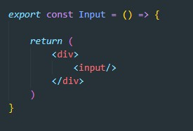Теперь мы эту компоненту передадим Field-у в атрибуте component
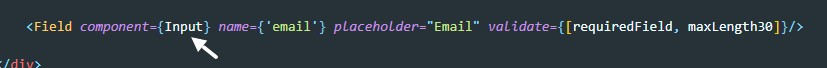Теперь Field прокинет все имеющиеся у себя пропсы в нашу компоненту (и свойства и колбэки) НО если сейчас вывести в косноль что пришло компоненте Input в пропсах то мы вот что увидим:
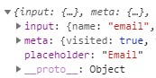В разделе input будут храниться обработчики событий, значение value и имя поля. В meta есть разделы error и touched которые хранят в себе информацию о том вернул ли ошибку валидатор и было ли поле затронут (т.е. получило и тут же потеряло фокус) помимо meta и input в пропсах могут находится обычные атрибута тега, такие как placeholder. Что бы получить эти данные в отдельных переменных применим оператор rest
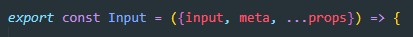Теперь создадим CSS файл которым подключим к компоненте которая отрисовывает поле input и добавим там класс error который будет добавлять красную обводку поля. Далее создаем условие
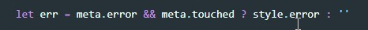если поле было затронуто и валидатор вернул ошибку тогда в переменную помещаем строку с классом ошибки иначе возвращаем пустую строку. Теперь все что остается это передать все атрибуты которые хранятся в разделе input пропсов и обычные атрибуты тега. С помощью spread раскукоживаем их в теле input
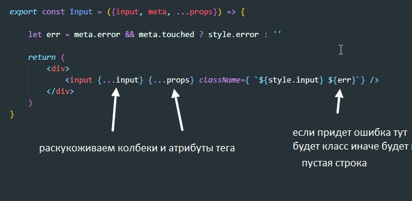